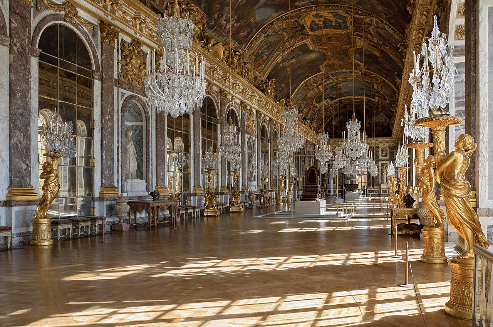

你的穿搭，
像哪個時裝屋？
從衣櫃裡反覆穿的那件衣服，到你希望別人怎麼記得你。用日常的選擇，找到和你最接近的時裝屋。

你的 Fashion House
你的答案透露了什麼？
這次有幾種風格很接近，結果反映整輪回答的整體傾向。
Fashion House Quiz
從衣櫃裡反覆穿的那件衣服，到你希望別人怎麼記得你。用日常的選擇，找到和你最接近的時裝屋。

你的 Fashion House
這次有幾種風格很接近，結果反映整輪回答的整體傾向。